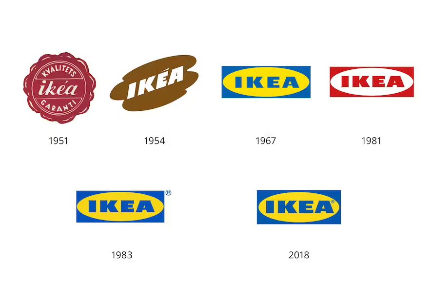

The word ‘IKEA’ is an acronym that celebrates our Swedish heritage. I stands for Ingvar, the first name of the IKEA founder. K is for Kamprad, his last name. E is for Elmtaryd, the name of the farm where Ingvar grew up, and A is for Agunnaryd, the name of the parish in Småland, Ingvar's home village.
Our first ever logo was created in 1951. It was round in shape and used the color red. IKEA founder, Ingvar Kamprad, liked the color red because it represents low price.